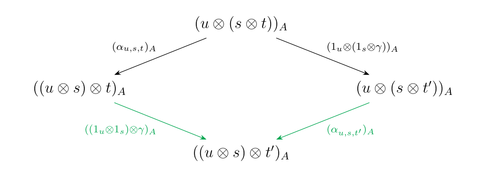
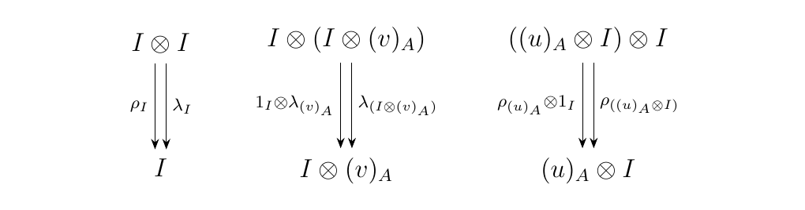

7.4. Mac Lane's Coherence Theorem
\subsection*{Step One: Category of Binary Words} To begin the proof of the coherence theorem, we need to first state the theorem itself. This task itself is quite laborious, although it is a worthwhile investment to establish clear terminology and notation, especially in writing the proof itself. Our primary tool will be the abstract concept of a binary word.
Let \(x_0, x_1\) be two distinct symbols. A binary word \(w\) is an element defined recursively as follows.
- \(x_0\) and \(x_1\) are binary words.
- If \(u, v\) are binary words, then \((u) \otimes (v)\) is a binary word.
More precisely, a binary word is any element in the free magma \(M = F(\{x_0,x_1\})\) generated by \(x_0,x_1\), but we will see that the first definition we offered is more useful and transparent.
Since \(x_0, x_1\) are binary words so is the expression \((x_0)\otimes (x_1)\). Similarly, the expressions
are binary words.
From the previous example, we see that the notation is a bit clunky. On one hand, our definition, which states that \((u)\otimes(v)\) is a binary word if \(u,v\) are, is required so that we can logically manage our parentheses. On the other, it makes notation clunky.
To remedy this, we will often omit parentheses. Given an expression of a binary word, we will always omit the parentheses around individual symbols in the expression. With this rule, we have that:
That is, we keep the parentheses which group together individual products, and throw away the ones which our smart human brains can don't need.
Next, we move onto an important quantity that we will often perform induction on.
We define the length of a binary word \(w\), denoted as \(\mathcal{L}(w)\), recursively as follows.
- sep-0.25em
- \(\mathcal{L}(x_0) = 0\) and \(\mathcal{L}(x_1) = 1\)
- If \(w= u \otimes v\) for two binary words \(u, v\), we set \(\mathcal{L}(w) = \mathcal{L}(u) + \mathcal{L}(v)\).
The binary words \((x_1\otimes x_0)\otimes x_1\), \((x_1\otimes x_1)\otimes x_0\), \((x_0 \otimes (x_1\otimes x_1))\otimes x_0\) all have length \(2\).
More informally, the length of binary word is simply the number of \(x_1\) symbols that appear in its expression.
For any binary word \(w\), we have that
If additionally \(u,v\) are binary words, we also have that
We will use the observations made in the previous example later in this section.
We now demonstrate that these binary words assemble into a category.
The category of binary words is the category \(\mathcal{W}\) where
- Objects. All binary words \(w\) of length \(n = 0, 1, 2, \dots,\)
- Morphisms. For any two binary words \(w\) and \(v\), we have that
where \(\{\bullet\}\) denotes the one point set.
What the above definition tells us is that any two binary words share a morphism if and only if they are of the same length. Moreover, they will only ever share exactly one morphism. Since there is always at most one morphism between any two objects in \(\mathcal{W}\), we see that \(\mathcal{W}\) is a \hyperref[definition:thin-category]{\textcolor{Blue}{thin category}}. Moreover, it is monoidal. To prove that it is monoidal, we will need the following small lemma.
The multiplication of binary words extends to a bifunctor \(\otimes: \ww \times \ww \to \ww\).
First, we explain how \(\otimes: \ww \times \ww \to \ww\) operates on objects and morphisms. If \((u, v)\) is an object of \(\ww \times \ww\), we set \(\otimes(u, v) = u \otimes v\). Next, consider two morphisms in \(\ww\).
Note that this implies \(\ll(u) = \ll(u')\) an \(\ll(v) = \ll(v')\), which also imply that
Therefore, we define the image of \((\gamma, \beta)\) under the functor, \(\otimes(\gamma, \beta)\), which we more naturally denote as \(\gamma\otimes \beta\), to be the unique morphism between \(u \otimes v \to u' \otimes v'\).
We can picture the action of this functor on objects and morphisms more clearly as below.
In addition, for any \((u,v)\) in \(\ww\times\ww\), the identity morphism \(1_{(u,v)}: (u,v) \to (u,v)\) is mapped to the identity \(1_{u\otimes v} :u \otimes v \to u \otimes v\). Finally, to demonstrate that this respects composition, suppose that \((\gamma, \beta)\) is composable with \((\gamma', \beta')\) as below.
As both \((\gamma', \beta')\otimes(\gamma, \beta)\) and \((\gamma' \circ \gamma)\otimes (\beta' \circ \beta)\) are parallel morphisms acting as \((u_1,v_1) \to (u_3, v_3)\), they must be equal because \(\ww\) is a thin category (and hence parallel morphisms are equal).
Therefore, we see that \(\otimes: \ww \times \ww \to \ww\) is a bifunctor.
We now show that \(\ww\) assembles into a monoidal category.
\((\ww, \otimes, x_0)\) is a monoidal category
with monoidal product \(\otimes: \ww \times \ww \to \ww\)
and identity object \(x_0\).
First, we define our product to be given by the bifunctor \(\otimes: \ww\times\ww \to \ww\). Second, we define our identity object to be \(x_0\). With these two conditions we now need to find unitors, an associator, and check that the necessary diagrams commute.
Now as any two binary words of the same length share a unique morphism,
all morphisms are isomorphisms. Therefore, by Example \ref{example:binary_word_lengths},
the isomorphisms
are forced to exist. Further, these isomorphisms are natural because all diagrams commute in a thin category. In addition, since \(\ww\) is a thin category, all diagrams commute, and so, in particular, the required diagrams
also commute, so that \((\ww, \otimes, x_0)\) satisfies the axioms of a monoidal category. We now make a few important comments on how to interpret \(\alpha, \rho\), and \(\lambda\).
- sep-0.25em
- Each \(\alpha_{u,v,w}: u \otimes (v \otimes w) \to (u \otimes v) \otimes w\) can be thought of as an operator which shifts the parentheses to the left. Dually, \(\alpha_{u,v,w}^{-1}\) shift them to the right.
- Each \(\lambda_w: x_0 \otimes w \isomarrow w\) can be thought of as an operator that removes an identity from the left. Dually, \(\lambda_w^{-1}\) adds an identity to the left.
- Each \(\rho_w: w \otimes x_0 \isomarrow w\) can be thought of as an operator that removes an identity from the right. Dually, \(\rho^{-1}_w\) adds an identity to the right.
Hence, this very primitive monoidal category \(\ww\) encodes some basic and useful operators on binary words.
\subsection*{Step Two: Pure Binary Words} In this section we begin discussing a specific subset of binary words, namely the ones which lack an identity \(x_0\). As the theorem is quite complex, this initial restriction allows us to develop intuition and some tools that simplify the proof later.
A pure binary word \(w\) of length \(n\) is a binary word \(w\) of length \(n\) which has no instance the empty word \(x_0\).
The only pure binary word of length 1 is \(x_1\). There is also only one pure binary word of length 2, which is \(x_1 \otimes x_1\). The pure binary words of length 3 are \
and the pure binary words of length 4 are as below.
As a side note, we comment that the number of pure binary words of length \(n+1\) is the \(n\)-th Catalan number
However, we make no critical use of this fact in our proofs.
Next, we form a category of pure binary words.
The category of pure binary words \(\wp\)
is the full subcategory of \(\ww\) constructed by restricting
the objects of \(\ww\) to its pure binary words.
More explicitly, \(\wp\) is the category defined as:
- Objects. All pure binary words \(w\) of length \(n = 0, 1, 2, \dots,\)
- Morphisms. For any two pure binary words \(u,v\) of the same length, we have that \(\hom_{\ww_A}(u,v) = \{\bullet\}\), the one point set. No other morphisms are allowed.
We now focus on a particular set of morphisms in \(\wp\). Recall that we may think of each \(\alpha_{u,w,v}\) as a "shift map"
which makes a single change in the parenthesis of a binary word. However, \(\alpha\) itself does not characterize all possible always in which we make a single change of parentheses within a larger, more complex binary word. An example of this is the morphism
which makes an internal change of parentheses. As we will need to focus on these more complicated morphisms, we rigorously define them below.
[\(\alpha\)-arrows]
A \(**forward ** \bm{\alpha}**-arrow**\) of \(\wp\) is a morphism in \(\wp\)
which we recursively define as follows.
- For any triple of pure binary words \(w_1, w_2, w_3\) in \(\wp\), the morphism
is a forward \(\alpha\)-arrow. * If \(\beta: w \to w'\) is a forward \(\alpha\)-arrow, and \(u\) is an arbitrary pure binary word, then the morphisms
are forward \(\alpha\)-arrows.
We also define a **backward \(\bm{\alpha**\)-arrow} to be the inverse of a forward \(\alpha\)-arrow.
Below are a few simple examples of \(\alpha\)-arrows. The first two are forward, while the third is backward.
We can have even more complicated examples; for example, the morphism below
is an \(\alpha\)-morphism for any pure binary words \(u, v\). For example, setting \(u = (x_1 \otimes x_1)\otimes x_1\) and \(v = x_1 \otimes x_1\), we obtain the forward \(\alpha\)-arrow as below.
We emphasize that \(\alpha\)-arrows only ever involve a single instance of \(\alpha\) or \(\alpha^{-1}\) in their expression.
Next, we introduce a particularly important instance of a pure binary word that will become essential to our proof.
We define the terminal word \(w^{(n)}\) of length \(n\) recursively as follows.
- \(x_1\) is the terminal word of length 1.
- If \(w^{(k)}\) is the terminal word of length \(k\), then \(w^{(k+1)} = w^{k}\otimes x_1\) is the terminal word of length \(k+1\).
More informally, the terminal word is the unique pure binary word of length \(n\) for which all parentheses begin on the left.
Below we list the terminal words by length. \begin{center}
| Length |\multicolumn{1}{c|}{Terminal Word}| |---------|----------------------------------| | \(1\) |\(x_1\)| |\(2\) |\(x_1 \otimes x_1 \(| |\)3\) |\((x_1 \otimes x_1)\otimes x_1 \(| |\)4\) |\(((x_1 \otimes x_1)\otimes x_1)\otimes x_1 \(| |\)5\) |\((((x_1 \otimes x_1)\otimes x_1)\otimes x_1)\otimes x_1\)| ||
\end{center}
We now introduce a quantity which provides a "distance-measure" between a pure binary word of length \(n\) and the terminal word \(w^{(n)}\).
We (recursively) define the rank of a binary word as follows.
- \(r(x_1) = 0\).
- For a pure binary word of the form \(w = u \otimes v\), we set
We compute the ranks on the pure binary words of length \(4\).
Note that \(w^{(4)} = ((x_1x_1)x_1)x_1\) and \(r(((x_1x_1)x_1)x) = 0\). Hence we see that our intuition of the rank being a distance measure from \(w^{(n)}\) so far makes sense.
An important property of distance-measuring functions is nonnegativity, which we will now see is satisfied by the rank function.
Let \(w\) be a pure binary word of length \(n\). Then \(r(w) \ge 0\).
We prove this by induction on \(n\). First observe that this clearly holds for \(n = 0\) since \(r(x_1) = 0\).
Now let \(w\) be a pure binary word of length \(k\), and suppose the statement is true for all pure binary words with length less than \(k\). Since \(k > 1\), we may write \(w = u \otimes v\) for some pure binary words \(u,v\), in which case
Since \(\ll(v) \ge 1\), we see that \(r(w) \ge 0\) as desired.
Keeping with the analogy of the rank being a distance measure, we ought to verify that it is zero if and only if the input, which is being measured from \(w^{(n)}\), is \(w^{(n)}\) itself. We verify that this is the case for the rank function.
Let \(w\) be a pure binary word of length \(n\). Then \(r(w) = 0\) if and only if \(w = w^{(n)}\).
We proceed by induction. In the simplest case, when \(n = 1\), we have that \(r(x_1) = 0\) by definition. As \(x_1 = w^{(1)}\), we see that this satisfies the statement.
Let \(w\) be a pure binary word of length \(k\), and suppose the statement is true for all pure binary words with length less than \(k\). Then we may write our word in the form \(w = u \otimes v\), and we have that
By Lemma \ref{lemma:rank_is_positive} we know that \(r(u), r(v) \ge 0\). Therefore, if \(\ll(v) > 1\) then \(r(w) \ne 0\). Hence, consider the case for when \(\ll(v) = 1\), so that \(v = x_1\). Then
Therefore, \(r(w) = 0\) if and only if if \(r(u) = 0\). But by induction, this holds if and only if \(u = w^{(k-1)}\). So we see that \(w = w^{(k-1)}\otimes x_1 = w^{(k)}\), which proves our result for all \(n\).
Let \(\beta: v \to w\) be a forward \(\alpha\)-arrow. Then \(r(v) < r(w)\). In other words, forward \(\alpha\)-arrows decrease rank.
To demonstrate this, we perform induction on the structure of forward \(\alpha\)-arrows.
Our base case is \(\beta = \alpha_{u, v, w}: u\otimes(v\otimes w) \isomarrow (u\otimes v)\otimes w\) for some arbitrary words \(u, v, w\). With this case, observe that
while
If we subtract the quantities, we observe that
since \(v\) has at least length 1. Therefore \(\alpha_{u,v,w}\) decreases length as desired.
Next, we reach our inductive step: let \(\beta = 1_{u} \otimes \gamma : u \otimes v \to u \otimes w\) where \(\gamma: v \to w\) is a forward \(\alpha\)-arrow for which the statement is already true.
In this case we have that
while
Since \(\ll(v) = \ll(w)\) and \(r(v) > r(w)\), we see that \(r(u \otimes v) > r(u \otimes w)\). Therefore, we see that \(\beta = 1_u \otimes \gamma\) decreases rank whenever \(\gamma\) is a forward \(\alpha\)-arrow that also decreases rank.
Finally, let \(\beta = \gamma \otimes 1_{u}\) where \(\gamma: v \to w\) is a forward \(\alpha\) arrow for which the statement is already true. Then we may write \(\beta: v \otimes u \to w \otimes u\) Now observe that
while
Since \(\gamma: v \to w\) decreases rank, we see that \(r(v) > r(w)\) and therefore \(r(v \otimes u) > r(w \otimes u)\), as desired.
This completes the proof by induction, so that the statement is true for all forward \(\alpha\)-arrows.
Thus what we have on our hands is the following. We know that the rank of word \(w\) is zero if and only if \(w = w^{(n)}\). Further, we know that applying \(\alpha\)-arrows to a pure binary word will decrease its rank. In other words, shifting the parentheses of a pure binary word \(w\) brings \(w\) "closer" to \(w^{(n)}\) (whose parentheses are all on the left). Therefore, the rank of a pure binary word gives us a measure for how far a binary word \(w\) is away from \(w^{(n)}\).
The following lemma demonstrates our interest in the word \(w^{(n)}\).
Let \(w\) be a pure binary word of length \(n\). If \(w \ne w^{(n)}\), then there exists a finite sequence of forward \(\alpha\)-arrows from \(w\) to \(w^{(n)}\).
We first show that for every pure binary word \(w \ne w^{(n)}\) there exists a forward \(\alpha\)-arrow \(\beta\) with domain \(w\). We prove this statement by induction on length.
Observe the result is immediate for \(n = 1, 2\). Suppose the result is true for binary words with length less than \(n \ge 3\). Let \(w\) be a pure binary word with length \(n\). Then \(w = u \otimes v\), with \(u,v\) other pure binary words. We now consider two cases for \(u\) and \(v\).
- (1) The first case is when \(\ll(v) = 1\), so that \(v = x_1\). As \(w \ne w^{(n)}\) we know that \(u \ne w^{(n-1)}\), and since \(u\) has length less than \(w\), we see that by induction there exists a forward \(\alpha\)-arrow \(\beta: u \to u'\). Using \(\beta\), we can construct the forward \(\alpha\)-arrow
Hence \(\beta \otimes 1_{x_1}\) is our desired forward \(\alpha\)-arrow with domain \(w\). * (2) The second case is when \(\ll(v) > 1\). In this case we may write \(w = u \otimes (r \otimes s)\). A natural choice for a forward \(\alpha\)-arrow in this case is simply
so that this case is also satisfied.
As we see, in all cases for \(w \ne w^{(n)}\), we can find a forward \(\alpha\)-arrow with domain \(w\). As \(\alpha\)-arrows decrease rank, and \(r(w) = 0\) if and only if \(w^{(n)}\), this guarantees a sequence of \(\alpha\)-arrows from \(w\) to \(w^{(n)}\), which is what we set out to show.
The previous proposition has an immediate, useful corollary. It will be used as one of the building blocks for the next section.
Every morphism in \(\wp\) can be expressed as a finite composition of \(\alpha\)-arrows.
Let \(v, w\) be arbitrary pure binary words. Denote \(\phi_{v,w}: v \to w\) to be the unique morphism from \(v\) to \(w\). By Proposition \ref{proposition_existence_of_w_to_wn} there exists chains of forward \(\alpha\)-arrows whose composite we denote as \(\Gamma_1: v \to w^{(n)}, \Gamma_2: w \to w^{(n)}\). Our situation is pictured below.
However, \(\wp\) is a thin category, so parallel morphisms must be equal. Therefore
Hence \(\phi_{v,w}\) is a composition of \(\alpha\)-arrows. As \(\phi_{v,w}\) was arbitrary, we see that every morphism in \(\wp\) is a finite composition of \(\alpha\)-arrows. What this corollary says is that every morphism in \(\wp\) can be expressed as a composite of forward and backward \(\alpha\)-arrows. However, we emphasize that there can be many different ways to represent a morphism in \(\wp\) via \(\alpha\)-arrows. This will be an issue which we discuss later in the next section.
\subsection*{Step Three: Coherence for \(A^{\otimes n}\) in \(\alpha\)} Using our results from the previous section, we are almost ready to take our first major step in the proof of Mac Lane's Coherence Theorem. Before we do so, we need to introduce terminology to even state the theorem which we will prove in this section. Towards that goal we introduce a few more definitions.
Let \((\mathcal{M}, \alpha, \lambda, \rho, I, \otimes)\) be a monoidal category. For an object \(A\) of \(\mm\), we define the proxy map of \(A\) to be a partial functor
as follows. Note by partial functor, we mean a functor defined on all objects of \(\wp\), but only a subset of all morphisms of \(\wp\).
-
Objects. We define the action on objects recursively as follows.
- We set \((x_1)_A = A\).
- For a binary word \(w = u \otimes v\), we define
$$ (w)_A = (u\otimes v)_A = (u)_A \otimes (v)_A $$ * Morphisms. We define the partial functor only on \(\alpha\)-arrows. We do this recursively as follows. * For \(\alpha_{u,v,w}\) with \(u,v,w\) as pure binary words, we set:
\begin{align} (\alpha_{u,v,w})A &= \alpha{(u)A,(v)_A,(w)_A}\ (\alpha^{-1}{u,v,w})A &= \alpha^{-1}{(u)_A,(v)_A,(w)_A} \end{align} * For \(1_{u} \otimes \beta\) and \(\beta \otimes 1_{u}\) with \(\beta\) an \(\alpha\)-arrow, we set:
\[\begin{align*} &(1_{u} \otimes \beta)_A = 1_{(u)_A} \otimes (\beta)_A\\ &(\beta \otimes 1_{u})_A = (\beta)_A\otimes 1_{(u)_A} \end{align*}\]
We now introduce the theorem of the section. This theorem is the first major step in the proof of the coherence theorem, and the rest of this section will be dedicated to proving it.
[Coherence in \(\alpha\).] Let \((\mm, \otimes, I, \alpha, \lambda, \rho)\) be a monoidal category. For every object \(A\), there exists a unique functor \(\Phi_A: \ww_P \to \mm\) which restricts to the proxy map \((-)_A\) on objects and \(\alpha\)-arrows of \(\wp\).
We address the question the reader most likely has in mind right now: Why did we only define the proxy map on \(\alpha\)-arrows? Why not define it on all of the morphisms of \(\wp\) to get a functor to begin with? We did this to avoid a potential well-definedness issue, which we now elaborate on.
Let us attempt to naturally extend the proxy map to a functor. With Corollary \ref{corollary:morphisms_of_wp}, it is clear how to proceed on defining \((-)_A\) on general morphisms. Let \(\gamma: v \to w\) be any morphism in \(\wp\). By Corollary \ref{corollary:morphisms_of_wp}, there exist forward and backward \(\alpha\)-arrows \(\gamma_1, \dots, \gamma_n\) such that
Since the proxy map is in fact defined on \(\alpha\)-arrows, and since functors preserve composition, we are required to define
However, we need to be careful. Suppose that we can also express \(\gamma\) as the finite composition of \(\alpha\)-morphisms \(\delta_1, \dots , \delta_m\).
While \(\gamma_n \circ \cdots \circ \gamma_1 = \delta_m \circ \cdots \circ \delta_1\) because \(\wp\) is a thin category, and therefore parallel morphisms are equal, we have no idea if
is true in \(\mm\). That is, we do not know if equivalent morphisms in \(\wp\) are mapped to equal morphisms under the proxy map. Our issue is one of well-definedness.
This issue is similar to one which arises in group theory. When one attempts to define a group homomorphism on a quotient group, they must understand that there are different, equivalent ways to represent an element. In this situation they must make sure that the equivalent elements are mapped to the same target in the codomain.
To illustrate our point, we include a concrete example of our problem which also demonstrates its nontriviality. For notational convenience, we suppress the instances of the monoidal product \(\otimes\). Let
Then we have many possible ways of expressing \(\gamma\) in terms of our \(\alpha\)-arrows. Some potential ways we could express \(\gamma\) are displayed below in \textcolor{Purple}{purple}, \textcolor{NavyBlue}{blue}, or \textcolor{Orange}{orange}.
As this is a thin category, we know that the composition of these paths are equal in \(\wp\). However, we now have many ways to define \(\gamma\) under the proxy map \((-)_A\). We could write
or
or
But as morphisms in \(\mm\), we don't know if these compositions in \(\mm\), displayed below, are all equal.
Hence we need to show that the \textcolor{Purple}{purple}, \textcolor{NavyBlue}{blue}, and \textcolor{Orange}{orange} compositions are equal in \(\mm\). While we could perform tedious diagram chases to show that they are equal in \(\mm\), that would only address three of the many possible ways to express \(\gamma\). It also would not take care of the case for much larger binary words! Hence, this problem is very nontrivial in general; we need higher level techniques to get what we want.
Therefore, to define a functor in the first place, we need to prove the following fact.
Let \((\mathcal{M}, \otimes, I, \alpha, \lambda, \rho)\) be a monoidal category, and let \(A\) be an object of \(\mm\). Let \(v,w\) be binary words of the same length. If \(\beta_1, \dots , \beta_k\) and \(\gamma_1, \dots , \gamma_{\ell}\) are \(\alpha\)-arrows with
then \((\beta_k)_A \circ \cdots \circ (\beta_1)_A = (\gamma_{\ell})_A \circ \cdots \circ (\gamma_1)_A\) in \(\mm\).
To prove this proposition, we will see that it actually suffices to prove the the special case with \(w = w^{(n)}\) and with \(\beta_1, \dots , \beta_{k}\) and \(\gamma_1, \dots , \gamma_{\ell}\) all forward \(\alpha\)-arrows. That is, it suffices to prove the following proposition.
Let \((\mathcal{M}, \otimes, I, \alpha, \lambda, \rho)\) be a monoidal category, and let \(A\) be an object of \(\mm\). Let \(w\) be a pure binary word of length \(n\). If \(\beta_1, \dots , \beta_k\) and \(\gamma_1, \dots , \gamma_{\ell}\) are forward \(\alpha\)-arrows with
in \(\wp\), then \((\beta_k)_A \circ \cdots \circ (\beta_1)_A = (\gamma_{\ell})_A \circ \cdots \circ (\gamma_1)_A\) in \(\mm\).
To prove this it will suffice to prove the Diamond Lemma (stated below). It will turn out the bulk of the overall proof toward our theorem will be spent on the Diamond Lemma. At the risk of downplaying its importance, we leave the proof of the Diamond Lemma to the end since it is very tedious and involved, and we do not want to disrupt the flow of the current discussion.
We summarize our plan on how to prove Theorem \ref{theorem:coherence_in_alpha}. The uncolored boxes, and the implications between them, are what is left to do.
[Diamond Lemma] Let \(w\) be a pure binary word and suppose \(\beta_1,\beta_2\) are two forward \(\alpha\)-arrows as below.
There exists a pure binary word \(z\) and two \(\gamma_1: w_1 \to z, \gamma_2: w_2 \to z\), with \(\gamma_1, \gamma_2\) a composition of forward \(\alpha\)-arrows, such that for any monoidal category \((\mm, \otimes, I, \alpha, \lambda, \rho)\) the diagram below is commutative in \(\mm\).
Since the above lemma is an existence result, we emphasize this fact by coloring the arrows, which we are asserting to exist, Green. This is a practice we will continue.
As promised, we now prove Proposition \ref{proposition:parallel_w_to_wn_equal_in_M} using the Diamond lemma. We restate the statement of the proposition for the reader's convenience.
\begin{customprop}{\ref{proposition:parallel_w_to_wn_equal_in_M}} Let \((\mathcal{M}, \otimes, I, \alpha, \lambda, \rho)\) be a monoidal category, and let \(A\) be an object of \(\mm\). Let \(w\) be a pure binary word of length \(n\). If \(\beta_1, \dots , \beta_k\) and \(\gamma_1, \dots , \gamma_{\ell}\) are forward \(\alpha\)-arrows with
in \(\wp\), then \((\beta_k)_A \circ \cdots \circ (\beta_1)_A = (\gamma_{\ell})_A \circ \cdots \circ (\gamma_1)_A\) in \(\mm\). \end{customprop}
To prove the desired statement, we proceed by induction on the rank of a pure binary word \(w\). In what follows we write we will write \(w = u \otimes v\) since \(\ll(w) \ge 3\).
For our base case let \(w\) be a word of rank 0. Then by Proposition \ref{proposition:rank_is_zero} we see that \(w = w^{(n)}\) so that this statement is trivial.
Next suppose the statement is true for all words with rank at most \(k\) where \(k \ge 0\). Let \(w\) be a pure binary word of rank \(k+1\). We want to show that the diagram in \(\mm\)
is commutative. By the Diamond Lemma \ref{lemma:diamond_lemma}, there exists exist a pure binary word \(z\) and two composites of forward \(\alpha\)-arrows \(\beta'\) and \(\gamma'\) such that the diagram below is commutative in \(\mm\).
Let \(\Gamma_z: z \to w^{(n)}\) by any composition of forward \(\alpha\)-arrows from \(z\) to \(w^{(n)}\); at least one must exist by Proposition \ref{proposition_existence_of_w_to_wn}. We can now combine our two diagrams in \(\mm\) to obtain the diagram below.
By Lemma \ref{lemma:directed_decreases_rank}, we know that forward \(\alpha\)-arrows decrease rank, so that \(r(u_1) < r(w)\) and \(r(v_1) > r(w)\). Hence we invoke our induction hypothesis to conclude that both the lower left and lower right triangles commute in \(\mm\). As the original upper diamond already commutes via the Diamond Lemma, we see that the entire diagram is commutative. Therefore we have that
in \(\mm\). This completes our induction and hence the proof.
As promised, we use the above proposition to prove Proposition \ref{proposition:parallel_in_M_are_equal}.
\begin{customprop}{\ref{proposition:parallel_in_M_are_equal}} Let \((\mathcal{M}, \otimes, I, \alpha, \lambda, \rho)\) be a monoidal category, and let \(A\) be an object of \(\mm\). Let \(v,w\) be binary words of the same length. If \(\beta_1, \dots , \beta_k\) and \(\gamma_1, \dots , \gamma_{\ell}\) are \(\alpha\)-arrows with
then \((\beta_k)_A \circ \cdots \circ (\beta_1)_A = (\gamma_{\ell})_A \circ \cdots \circ (\gamma_1)_A\) in \(\mm\). \end{customprop}
We begin by denoting the domain and codomain of the \(\alpha\)-arrows to make our discussion clear. Let \(u_0, \dots, u_k, t_0, \dots, t_{\ell}\) be the pure binary words such that \(u_0 = t_0 = v\), \(v_k = u_{\ell} = w\) and
Note that each morphism may either be forward or backward. With this notation we can picture our parallel \(\alpha\)-arrows in \(\wp\) as below.
Now consider the image of this diagram in \(\mm\), which we do not yet know to be commutative.
Our goal is to show that this diagram in \(\mm\) is in fact commutative. This will then show our desired equality.
By Proposition \ref{proposition_existence_of_w_to_wn}, we can connect each pure binary word \(u_i\) and \(t_i\) to the terminal word \(w^{(n)}\) with forward \(\alpha\)-arrows \(\Gamma_{u_i}: u_i \to w^{(n)}\) and \(\Gamma_{t_i}: t_i \to w^{(n)}\). If we add these to our diagram (and suppress the notation on the \(\Gamma\)'s), it becomes
whose image under the proxy map in \(\mm\) is
Thus the diagram has become a cone, with apex \(w^{(n)}\), which is sliced by the triangles. The base of this cone is the original diagram. We now show that each triangle is commutative.
Note that each triangle is of two possible forms: it either consists of \(\beta_i\) or \(\gamma_i\). Without loss of generality, consider a triangle with an instance of \(\beta_i\), as below.
 Now if \(\beta_i\) is a forward \(\alpha\)-arrow,
observe that by Proposition \ref{proposition:parallel_w_to_wn_equal_in_M}
it is a commutative diagram in \(\mm\).
Now if \(\beta_i\) is a forward \(\alpha\)-arrow,
observe that by Proposition \ref{proposition:parallel_w_to_wn_equal_in_M}
it is a commutative diagram in \(\mm\).
On the other hand, suppose \(\beta_i\) is a backward \(\alpha\)-arrow. Then \(\beta_i^{-1}\) is a forward \(\alpha\)-arrow. Then we may rewrite the triangle as
so that it now consists entirely of forward \(\alpha\)-arrows. This then
allows us to apply Proposition \ref{proposition:parallel_w_to_wn_equal_in_M}
to guarantee that it is a commutative diagram in \(\mm\).
Thus, what we have shown is that each triangle in the
above diagram is commutative in \(\mm\). This literally means that
for each \(i\),
Therefore, we see that \((\beta_k)_A \circ \cdots \circ (\beta_1)_A\) can be written as
which is a "telescoping" composition that reduces to
Similarly, we can expression \((\gamma_{\ell})_A \circ \cdots \circ (\gamma_1)_A\) as
which also reduces to
However, \(u_k = t_{\ell}\) and \(u_0 = t_0\), so that
Thus we have that our original diagram in \(\mm\)
is commutative. Therefore we have that parallel sequences of \(\alpha\)-arrows are equal in \(\mm\), as desired.
Finally, we use all of our previous work to prove Theorem \ref{theorem:coherence_in_alpha}. In this case, the proof is simply the definition of our desired functor. We state the theorem here for the reader's convenience.
To define this functor, we will (in this order) define the functor on (1) object, (2) \(\alpha\)-arrows, (3) general morphisms of \(\wp\), and then finally show that our definition preserves composition.
- Objects. For a pure binary word \(w\), we define \(\Phi_A(w) = (w)_A\).
-
Morphisms.
- (1) If \(\beta\) is an \(\alpha\)-arrow, we define \(\Phi_A(\beta) = (\beta)_A\).
- (2) Now we define our functor on a general morphism \(v \to w\) in \(\wp\). For convenience denote this as \(\phi_{v,w}: v \to w\).
We know by Corollary \ref{corollary:morphisms_of_wp} that there exist finitely many forward and backward \(\alpha\)-arrows \(\gamma_1, \dots, \gamma_k\) such that
\[ \phi_{v,w} = \gamma_k \circ \cdots \circ \gamma_1. \]Therefore, define
\[ \Phi_A(\phi_{v,w}) = \Phi(\gamma_k \circ \cdots \circ \gamma_1)= (\gamma_k)_A \circ \cdots \circ (\gamma_1)_A. \]By Proposition \ref{proposition:parallel_in_M_are_equal}, we see that this definition is well-defined.
We conclude this section by proving the Diamond Lemma, which we have now seen to play a critical role in this proof. \begin{customlemma}{\ref{lemma:diamond_lemma}}[Diamond Lemma] Let \(w\) be a pure binary word and suppose \(\beta_1,\beta_2\) are two forward \(\alpha\)-arrows as below.
 There exists a pure binary word \(z\) and two \(\gamma_1: w_1 \to z, \gamma_2: w_2 \to z\),
with \(\gamma_1, \gamma_2\) a composition of forward \(\alpha\)-arrows,
such that for any monoidal category
\((\mm, \otimes, I, \alpha, \lambda, \rho)\) the diagram below is
commutative in \(\mm\).
There exists a pure binary word \(z\) and two \(\gamma_1: w_1 \to z, \gamma_2: w_2 \to z\),
with \(\gamma_1, \gamma_2\) a composition of forward \(\alpha\)-arrows,
such that for any monoidal category
\((\mm, \otimes, I, \alpha, \lambda, \rho)\) the diagram below is
commutative in \(\mm\).
 is commutative.
\end{customlemma}
is commutative.
\end{customlemma}
As we said before, the above lemma is an existence result, so we emphasize this fact by coloring the arrows, which we are asserting to exist, Green.
We will prove this using induction on the length of \(w = u \otimes v\). Therefore, throughout the proof, suppose the result is already true for all words of length less than that of \(w\).
We proceed in a case-by-case basis, exhausting the possible forms of \(\beta_1\) and \(\beta_2\). For our purposes, we will express \(w = u \otimes v\). Whenever \(\ll(v) > 1\), we write \(v= s \otimes t\).
Let \(\beta_1, \beta_2\) be forward \(\alpha\)-arrows. Then \(\beta_1\) could be of the forms
and \(\beta_2\) could be of the forms
with \(\gamma_1, \gamma_2\) already forward \(\alpha\)-arrows. Therefore, our cases for \(\beta_1,\beta_2\), displayed in tuples, are listed in the table below. \begin{center}
| \((\beta_1,\beta_2)\) | \(\alpha_{u,s,t}\) | \(1_u\otimes \gamma_2\) | \(\gamma_2 \otimes 1_v\) \ [0.2cm] \(\alpha_{u,s,t}\) | \(\textcolor{Red}{(\alpha_{u,s,t}, \alpha_{u,s,t})}\) | \(\textcolor{NavyBlue}{(\alpha_{u,s,t},1_u \otimes \gamma_2)}\) | \(\textcolor{Orange}{(\alpha_{u,s,t}, \gamma_2\otimes 1_v)}\) |
|---|---|---|---|---|---|---|
| 0.2cm] \(1_u \otimes \gamma_1\) | \(\textcolor{NavyBlue}{(1_u \otimes \gamma_1, \alpha_{u,s,t})}\) | \(\textcolor{Magenta}{(1_u \otimes \gamma_1 ,1_u \otimes \gamma_2)}\) | \(\textcolor{Purple}{(1_u \otimes \gamma_1, \gamma_2\otimes 1_v)}\) | |||
| 0.2cm] \(\gamma_1\otimes 1_v\) | \(\textcolor{Orange}{(\gamma_1\otimes 1_v, \alpha_{u,s,t})}\) | \(\textcolor{Purple}{(\gamma_1\otimes 1_v ,1_u \otimes \gamma_2)}\) | \(\textcolor{ProcessBlue}{(\gamma_1\otimes 1_v, \gamma_2\otimes 1_v)}\) | |||
\end{center}
While there are 9 cases displayed above, we have pointed out via color the pairs of cases which are logically
equivalent to each other due to the symmetry of our problem. Therefore, we actually have 6 cases to check
We now proceed to the proof.
\noindentCase 1: \(\textcolor{Red}{(\alpha_{u,s,t}, \alpha_{u,s,t})}.\)\ In this case, we have that \(\beta_1 = \beta_2\), for which the statement is trivially true. \
\noindentCase 2: \(\textcolor{Purple}{(\gamma_1\otimes 1_v ,1_u \otimes \gamma_2)}\)\ Suppose \(\beta_1 = \gamma_1 \otimes 1_v\) and \(\beta_2 = 1_u\otimes \gamma_2\). Here, \(\gamma_1: u \to u'\) and \(\gamma_2: v \to v'\) for some pure binary words $ u',v'$. Then we get the diagram
which commutes by the bifunctoriality of \(\otimes\). \ \ Case 3: \(\textcolor{ProcessBlue}{(\gamma_1\otimes 1_v, \gamma_2\otimes 1_v)}\)\ Suppose \(\beta_1 = \gamma_1 \otimes 1_v\) and \(\beta_2 = \gamma_2 \otimes 1_v\) with \(\gamma_1: u \to u_1\) and \(\gamma_2: u \to u_2\) both forward \(\alpha\)-arrows.
Then in this case we have the triangle below in \(\mm\).
Note that the above diagram is the image of diagram
under the functor \((-)\otimes (v)_A\). As \(\ll(u) < \ll(u\otimes v)\), we know by our induction hypothesis that there exists a pure binary word \(z\) and a pair of composite, forward \(\alpha\)-arrows \(\sigma_1: u_1 \to z\) and \(\sigma_2: u_2 \to z\) such that the diagram below commutes in \(\mm\).
Therefore we can apply the functor \((-)\otimes (v)_A\) on the above diagram to obtain the commutative diagram below
which proves this case.
\
\
Case 4: \(\textcolor{Magenta}{(1_u \otimes \gamma_1 ,1_u \otimes \gamma_2)}\)\
The next case is when \(\beta_1 = 1_u \otimes \gamma_1\) and \(\beta_2 = 1_u\otimes\gamma_2\)
with \(\gamma_1: v \to v_1\) and \(\gamma_2: v \to v_2\). However, this can be proved
in a similar manner as the previous case using
the induction hypothesis and the functor \((u)_A \otimes (-)\).
\
\noindentCase 5: \(\textcolor{Orange}{(\alpha_{u,s,t}, \gamma_2\otimes 1_v)}\)\
Let \(\beta_1 = \alpha_{u,s,t}\), so that \(w = u \otimes (s \otimes t)\).
Let \(\beta_2 = \gamma_2 \otimes 1_{v}
= \gamma_2 \otimes 1_{s\otimes t}\)
with \(\gamma_2: u \to u'\)
a forward \(\alpha\)-arrow. Then we will have the diagram in \(\mm\)
which commutes in \(\mm\) by naturality of \(\alpha\). \ \ Case 6: \(\textcolor{NavyBlue}{(\alpha_{u,s,t},1_u \otimes \gamma_2)}\)\ Let \(\beta_1 = \alpha_{u,s,t}\), \(\beta_2 = 1_u \otimes \gamma\) with \(\gamma\) a forward \(\alpha\)-arrow with domain \(s \otimes t\). By the recursive definition of a forward \(\alpha\)-arrow, we have three possible cases for \(\gamma\). \ \ Case 6.1: \(\gamma = 1_s \otimes \gamma'\)\ With \(\gamma = 1_s \otimes \gamma'\) with \(\gamma' : t\to t'\) already a forward \(\alpha\)-arrow, we have the diagram in \(\mm\)
 which commutes in \(\mm\) by naturality of \(\alpha\). \ \ Case 6.2: \(\gamma = \gamma' \otimes 1_t\)\ If \(\gamma = \gamma' \otimes 1_t\) with \(\gamma': s \to s'\) already a forward \(\alpha\)-arrow, we can create the diagram
which also commutes in \(\mm\) by naturality of \(\alpha\). \ Case 6.3: \(\gamma = \alpha_{s,p,q}\)\ The third case for \(\gamma\) is when \(\gamma = \alpha_{s,p,q}\). In this case, we express \(w = u\otimes (s\otimes (p \otimes q))\). We can then construct the diagram
which is always commutative in \(\mm\). In this case, the word \(((u\otimes s)\otimes p)\otimes q\) acts as our vertex \(z\) which completes the diagram.
As we have exhausted all possible cases, we see that the statement is true for pure binary words of rank \(k+1\) if it is true for all pure binary words with rank at most \(k\). By induction, the statement is true for all binary words of any rank, so that we have proved the theorem.
\subsection*{Step Four: Binary Words}
So far we have established a unique functor \(\Phi_A: \wp \to \mm\) for each object \(A\) of any given monoidal category \(\mm\), and this functor grants us coherence in the associators between iterated monoidal products of a single object. We now consider such monoidal products with the identity \(I\) as well, so that we may say something about coherence with regard to the unitors \(\lambda\) and \(\rho\) in a general monoidal category. Towards that goal, we now consider binary words (not just pure binary words) and introduce some definitions.
Recall that \(\ll\) calculates the length of a binary word, or more informally, the number of \(x_1\)'s in a binary word. We now introduce a dual quantity which instead counts the number of \(x_0\)
Let \(w\) be a binary word. Define the identity length of \(w\), denoted \(\mathcal{E}\), recursively as follows.
- \(\ee(x_0) = 1\) and \(\ee(x_1) = 0\).
- \(\ee(u \otimes v) = \ee(u) + \ee(v)\).
Similarly to how \(\ll(-)\) counts the number of \(x_1\)'s in a binary word, \(\ee(-)\) counts the number of \(x_0\)'s in a binary word.
Next, we introduce the following concept that will later on be key to our proof of Mac Lane's Coherence Theorem.
Let \(w\) be a binary word. We define the clean word derived from \(w\), denoted \(\overline{w}\), recursively as follows.
- We set \(\overline{x_1} = x_1\).
- If \(\ll(w) = 0\) (i.e., it has no instance of \(x_1\)) then \(\overline{w} = x_0\).
- Let \(u,v\) be binary words with \(\ll(u) = 0\) and \(\ll(v) > 0\). Then [ \overline{u \otimes v} = \overline{v \otimes u} = \overline{v} ]
- Let \(u,v\) be binary words with \(\ll(u), \ll(v) > 0\). Then \(\overline{u\otimes v} = \overline{u} \otimes \overline{v}\).
Note that for a pure binary word \(w\), we have that \(\overline{w} =w\). Informally, the clean word of a binary word of nonzero length is simply the pure binary word obtained by removing all instances of the identity from its expression. In the case for a binary word with zero length, we naturally define the clean word to be \(x_0\) .
We offer some examples of clean words obtained from binary words. \begin{center}
| Word | Clean Word |
|---|---|
| \(x_0\otimes (x_0 \otimes x_0)\) | \(x_0\) |
| \(x_0 \otimes (x_1 \otimes x_0)\) | \(x_1\) |
| \((x_1 \otimes x_0) \otimes x_1\) | \(x_1 \otimes x_1\) |
| \(((x_1 \otimes x_0) \otimes x_0)\otimes x_1\) | \(x_1 \otimes x_1\) |
| \((x_1 \otimes x_0) \otimes ((x_1 \otimes x_0) \otimes x_1)\) | \(x_1 \otimes (x_1 \otimes x_1)\) |
\end{center}The above example also shows that two different binary words can have the same clean word.
[Monoidal Arrows] A forward monoidal arrow of \(\ww\) is defined recursively as follows.
- For any triple of binary words \(u, v, w\), the morphisms
are, respectively, forward \(\alpha\)-, \(\lambda\)-, and \(\rho\)-arrows. They are collectively defined to be forward monoidal arrows. * For any binary word \(u\) and forward monoidal arrow \(\mu\), the morphisms
are forward monoidal arrows.
Finally, we say a backward monoidal arrow is the inverse of a forward monoidal arrow.
We also establish the following terminology to distinguish our \(\alpha\)-arrows from our \(\lambda\) and \(\rho\) arrows.
A forward unitor arrow is either a forward \(\lambda\)-arrow or a forward \(\rho\)-arrow. Similarly, a backward unitor arrow is the inverse of a forward unitor arrow.
As we have already seen forward \(\alpha\)-arrows, we provide examples of forward and backward \(\lambda, \rho\)-arrows.
Below we have a forward and backward \(\lambda\)-arrow.
We also have forward and backward \(\rho\)-arrows below.
We now move onto proving some important lemmas regarding monoidal arrows that we will use for the coherence theorem.
The first three are quick, but have particular importance.
Let \(w\) be a binary word, \(w \ne x_0\). Then \(\ee(w) = 0\) if and only if \(w = \overline{w}\).
Note that \(w = x_0\) is the only case for which the above proposition is not true, since \(x_0 = \overline{x_0}\) but \(\ee(x_0) \ne 0\). Hence, our reasoning for excluding it (and it is not a case we will need to concern ourselves with).
Suppose \(\ee(w) = 0\), and let us prove the forward direction by induction on the length of the word. Let us write \(w = u \otimes v\), suppose that the statement is true for all pure binary words with length less than \(w\). Observe that
where we used the induction hypothesis on \(u, v\) which have smaller length than \(w\). Thus we see that \(w = \overline{w}\).
Conversely, suppose \(\overline{w} = w\), \(w \ne x_0\), and suppose the statement is true for binary words with length less than \(w\). Write \(w = u \otimes v\). By the definition of a clean word, the only way we can have \(\overline{w} = w\) is if \(u,v\) are binary words with nonzero length. Therefore, if \(\overline{w} = w\) we see that
Since \(u, v\) have smaller length than \(w\), we may use the induction hypothesis to conclude that \(\ee(u) = \ee(v) = 0\). Hence, \(\ee(w) = 0\), as desired.
Let \(w\) be a binary word. Suppose \(\iota: w \to w'\) is a forward unitor arrow. Then \(\ee(w') = \ee(w) - 1\).
In other words, any unitor arrow always takes away exactly one identity.
We prove this by examining the possible cases for \(\iota\). Write \(w = u \otimes v\). As \(\iota\) is a forward unitor arrow, it has four possible forms.
- (1) Suppose \(\iota = \lambda_v: x_0 \otimes v \to v\). As
we see that the statement is satisfied in this case. * (2) If \(\iota = \rho_u: u \otimes x_0 \to u\), we can use a similar argument as in (1) to prove the statement. * (3) Suppose \(\iota = 1_{u} \otimes \kappa: u \otimes v \to u \otimes v'\) where \(\kappa: v \to v'\) is a forward unitor arrow for which the statement is already true. Then \(\ee(v') = \ee(v) - 1\). Hence,
Therefore the statement is satisfied for \(1_u \otimes \kappa\) if it is true for \(\kappa\). * (4) If \(\iota = \kappa \otimes 1_v: u \otimes v \to u' \otimes v\) where \(\kappa\) is a forward unitor for which the statement is already true, then we may prove this case by following a similar argument as in (3).
As we have examined all cases, we may conclude that for every forward unitor \(\iota: w \to w'\), we have that \(\ee(w') = \ee(w) - 1\) as desired.
Let \(\iota: w \to w'\) be a forward unitor arrow. Then \(\overline{w} = \overline{w}'\).
In other words, unitor arrows do not alter the particular format of a clean word.
First, observe that the result is trivial if \(\ll(w) = \ll(w') = 0\). Therefore, let \(w = u \otimes v\) be such a binary word with \(\ee(w) > 0\). Suppose the statement is true for binary words \(v\) such that \(\ee(v) < \ee(w)\). Let \(\iota:w \to w'\) be a forward unitor arrow. By the recursive definition of \(\iota\), our forward unitor arrow has four possible forms.
- (1) Suppose \(\iota = \lambda_v: x_0 \otimes v \to v\). However, note that \(\overline{x_0 \otimes v} = \overline{v}\), so that this case is true.
- (2) If \(\iota = \rho_u: u \otimes x_0 \to u\), then this case may be proven in a similar manner as case (1).
- (3) Suppose \(\iota = 1_u \otimes \kappa: u \otimes v \to u \otimes v'\) where \(\kappa\) is a forward unitor arrow for which the result is already true. Since \(\ll(u \otimes v) < 0\), we have a few subcases.
Suppose \(\ll(v) > 0\). Then by our assumption on \(\kappa\), \(\overline{v} = \overline{v}'\). Therefore, if \(\ll(u) = 0\), we see that
which satisfies this case. If instead \(\ll(u) > 0\), then
which again satisfies the case.
Finally, suppose \(\ll(v) = 0\). Then \(\overline{u \otimes v} = \overline{u} = \overline{u \otimes v}'\).
In all cases we see that \(\overline{u \otimes v} = \overline{u \otimes v}'\) as desired. * (3) Our third case if when \(\iota = \kappa \otimes 1_v: u \otimes v \to u' \otimes v\) with \(\kappa\) a forward unitor for which the result is already true. However, this case can be proved similarly as in case (2).
In all instances, we see that for a forward unitor arrow \(\iota: w \to w'\), we have that \(\overline{w} = \overline{w}'\), as desired.
The following lemma is an important existence result that will be used in the next proposition.
Let \(w\) be a binary word with \(\ee(w) > 0\). Then there exists a forward unitor with domain \(w\).
We prove this by induction on the total length of a binary word \(\ll(w) + \ee(w)\). Thus, let \(w = u \otimes v\) be a binary word with \(\ee(w) > 0\) and suppose the statement is true for all binary words \(z\) with
Then we have a few cases for \(w\).
- (1) Suppose \(u = x_0\). Then we take the forward unitor \(\lambda_v: x_0 \otimes v \to v\).
- (2) Suppose \(v = x_0\). We may similarly take \(\rho_u: u \otimes x_0 \to u\), so that this case is satisfied.
- (3) Suppose \(u, v \ne x_0\). Since \(\ee(w) > 1\), either \(\ee(u)\) or \(\ee(v) > 0\). Without loss of generality, suppose \(\ee(u) > 0\). Since
we may apply our induction hypothesis to conclude that there exists a forward unitor \(\iota: u \to u'\) with domain \(u\). Hence, the morphism
is a forward unitor with domain \(u \otimes v = w\).
As we have evaluated all cases, we see that the statement is true for all binary words as desired.
The previous four lemmas now give rise to the following proposition.
Let \(w\) be a binary word with \(\ee(w) = \ell\). Then there exists a composable sequence of \({\ell}\)-many forward unitor arrows \(\iota_{\ell}, \cdots, \iota_1\) as below:
Moreover, for every such chain, we have that \(w' = \overline{w}\).
To prove existence of such a chain for every binary word with nonzero identity length, we may proceed by induction. Let \(w\) be a binary word with \(\ee(w) > 0\), and suppose that such a chain exists for binary words \(v\) with \(\ee(v) < \ee(w)\). Then by Lemma 2.5.10, there exists a forward unitor \(\iota: w \to w'\). By Lemma 2.5.8, \(\ee(w') = \ee(w) - 1\), so by our induction hypothesis, there exists a chain of forward unitor arrows
Hence, \(\iota \circ \iota_{{\ell}-1}\circ \cdots \circ \iota_1: w \to \overline{w}\) is a forward chain of unitors with initial domain \(w\), which proves existence.
To prove that \(w' = \overline{w}\), denote the domain and codomain of our unitors \(\iota_i: w_{i-1} \to w_{i}\), so that \(w_0 = w\). By Lemma 2.5.9, for each \(i\) we have that \(\overline{w_{i-1}} = \overline{w_{i}}\). Hence \(\overline{w} = \overline{w_{{\ell}}}\). By Lemma 2.5.8, we have that \(\ee(w_i) = \ee(w_{i-1}) - 1\). Therefore,
However, by Lemma 2.5.7, we see that this implies \(w_{\ell} = \overline{w_{\ell}} = \overline{w}\). Hence we see that
as desired.
The previous proposition immediately implies the next.
Let \(w\) be a binary word with \(\ll(w) > 0\). Then there exists a sequence of forward monoidal arrows from \(w\) to \(w^{(n)}\).
By Lemma \ref{lemma:existence_w_to_clean_w}, we have a sequence of forward unitor arrows from \(w\) to \(\overline{w}\).
Since \(\overline{w}\) is a pure binary word, we can then use Proposition \ref{proposition_existence_of_w_to_wn} to guarantee a sequence of forward \(\alpha\)-arrows from \(\overline{w}\) to \(w^{(n)}\).
Composing these morphisms then gives us our desired monoidal arrow:
so that such a sequence of forward monoidal arrows exists.
And the previous proposition gives us the following corollary.
Every morphism in \(\ww\) can be expressed as a composition of a sequence of forward and backward monoidal arrows.
The proof is the same exact proof as that of Corollary \ref{corollary:morphisms_of_wp}. We use the previous proposition with the fact that \(\ww\) is a thin category to conclude this.
\subsection*{Step Five: Coherence for \(A^{\otimes n}\) for \(\rho, \lambda\)}
In this section, we extend the work we've completed with the associators to now include the unitors. We will obtain a theorem similar to Theorem \ref{theorem:coherence_in_alpha}. To even state the theorem, we need to introduce a new definition.
Let \((\mm, \otimes, I, \alpha, \lambda, \rho)\) be a monoidal category. For each object \(A\) in \(\mm\), we define the general proxy map of \(A\) to be the partial functor \((-)_A: \ww \to \mm\) defined as follows.
-
Objects We define the general proxy map on objects recursively.
- We set \((x_0)_A = I\) and \((x_1)_A = A\)
- For a binary word \(w = u \otimes v\) we set:
[ (w)_A = (u \otimes v)_A = (u)_A\otimes (v)_A ] * Morphisms We define the partial functor only on \(\alpha\)-, \(\lambda\)-, and \(\rho\)-arrows. This is also done recursively. * For binary words \(u,v,w\), we set:
\begin{align} (\alpha_{u,v,w})A &= \alpha{(u_A, v_A, w_A)} : u_A \otimes (v_A \otimes w_A) \isomarrow (u_A \otimes v_A) \otimes w_A \ (\lambda_{u})A &= \lambda{u_A}: I \otimes u_A \isomarrow u_A \ (\rho_{u})A&= \rho{u_A} : u_A \otimes I \isomarrow u_A \end{align} * For a more general \(\alpha, \lambda\), or \(\rho\)-arrow of the form \(1_{u}\otimes \beta\) or \(\beta\otimes 1_{u}\) we set:
\[\begin{align*} &(1_{u} \otimes \beta)_A = 1_{u_A} \otimes (\beta)_A\\ &(\beta \otimes 1_{u})_A = (\beta)_A\otimes 1_{u_A} \end{align*}\]
Before concluding this definition, we note that there is some potential ambiguity in our definition on the unitors. This is because sometimes a forward unitor arrow in \(\ww\) can be expressed in two ways.
The reader may check that all possible cases for ambiguity are the three cases below.
As parallel morphisms in \(\ww\), they are equal. Therefore, in order for our definition to be well-defined, we need that the corresponding pairs of morphisms
 to be equal in \(\mm\). One can show that these morphisms are equal in \(\mm\) using the unitor diagrams \ref{mon_definition_diag_2}, \ref{mon_definition_diag_3}, and \ref{mon_definition_diag_4}. Regarding our notation, note that we are recycling the same notation from the proxy map to the general proxy map. This is because the only difference between the two is that the general proxy map is simply an extension of the proxy map which is now defined on identity elements \(x_0\) and unitors.
The goal of this section is to prove the following theorem, which can be thought of as an extension of Theorem \ref{theorem:coherence_in_alpha}.
[Coherence in Unitors]
Let \((\mm, \otimes, I, \alpha, \lambda, \rho)\) be a monoidal category. For
each object \(A\), there exists a unique strict monoidal functor \(\Delta_A: \ww \to \mm\)
which agrees with the general proxy map on objects and monoidal morphisms.
The above theorem is implied by Proposition \ref{proposition:full_parallel_in_M_are_equal} (stated below), in the same way that Theorem \ref{theorem:coherence_in_alpha} followed from Proposition \ref{proposition:parallel_in_M_are_equal}.
Let \((\mm, \otimes, I, \alpha, \lambda, \rho)\) be a monoidal category, and consider two binary words \(v,w\). Let \(\mu_1, \dots, \mu_k\) and \(\eta_1, \dots,\eta_{\ell}\) be monoidal arrows with:
Then \((\mu_k)_A \circ \cdots \circ (\mu_1)_A = (\eta_{\ell})_A\circ\cdots\circ (\eta_1)_A\) in \(\mm\).
The above proposition is implied by Proposition \ref{proposition:full_parallel_w_to_wn} (stated below), in the same way that Proposition \ref{proposition:parallel_in_M_are_equal} followed from Proposition \ref{proposition:parallel_w_to_wn_equal_in_M}
Let \((\mm, \otimes, I, \alpha, \lambda, \rho)\) be a monoidal category, and consider a binary word \(w\). Let \(\mu_1, \dots, \mu_k\) and \(\eta_1, \dots,\eta_{\ell}\) be forward monoidal arrows with:
Then \((\mu_k)_A \circ \cdots \circ (\mu_1)_A = (\eta_{\ell})_A\circ\cdots\circ (\eta_1)_A\) in \(\mm\).
Once we have the above proposition, we can prove Proposition \ref{proposition:full_parallel_in_M_are_equal}, and hence our desired theorem, using the same technique as in in the Proof of Proposition \ref{proposition:parallel_in_M_are_equal}.
We briefly recall such techniques: We consider two parallel chains of monoidal arrows. We then connect each object in the chain to \(w^{(n)}\) with a chain of forward monoidal arrow (recall that a chain must exist for each object). We then have a bunch of adjacent triangles with apex \(w^{(n)}\) and we can conclude via the Proposition \ref{proposition:full_parallel_w_to_wn} that each such triangle commutes. We then conclude that the original two parallel chains form a commutative diagram in \(\mm\). Thus, our two chains have the same composite in \(\mm\). This then proves Proposition \ref{proposition:full_parallel_in_M_are_equal}, which then grants us Theorem \ref{theorem:coherence_in_unitors}.
As our goal has been reduced to proving Proposition \ref{proposition:full_parallel_w_to_wn}, we prove this proposition using the following two results.
The first result is the following proposition.
[Arrow Reorganization] Let \(\mu_1, \dots, \mu_k\) be composable forward monoidal arrows with \(\ell\)-many unitor arrows. Then there exist composable forward unitor arrows \(\eta_1, \dots, \eta_{\ell}\) and forward \(\alpha\)-arrows \(\eta_{\ell + 1}, \dots \eta_m\) such that, for any monoidal category \(\mm\) with object \(A\), we have that
in \(\mm\).
The above proposition basically states that monoidal arrows can be reorganized in a particular way with all of the unitors in the front. The second result that we need in order to prove Proposition \ref{proposition:full_parallel_w_to_wn} is the following proposition.
[Unitor-Chain Equivalence] Let \(w\) be a binary word with nonzero length and with \(\ee(w) = k\). Suppose \(\mu_1, \dots, \mu_k\) and \(\eta_1, \dots, \eta_k\) are a composable sequence of forward unitor arrows:
Then \((\mu_k)_A \circ \cdots \circ (\mu_1)_A = (\eta_k)_A \circ \cdots \circ (\eta_1)_A\) in \(\mm\).
For the sake of organization, we will assume the validity of these two results now so that we may prove \ref{proposition:full_parallel_w_to_wn} We will then prove these two results in the next section.
\begin{varprf}[Proof of Proposition \ref{proposition:full_parallel_w_to_wn}] \textcolor{white}{Hello!} \ Let
be any two composites of forward monoidal arrows from \(w\) to \(w^{(n)}\).
Since \(\ee(w) = k\) and \(\ee( w^{(n)}) = 0\), we know
by Lemma \ref{lemma:unitors_decrease_unit_length} that
there are exactly \(k\)-many forward unitors in each expression.
We can then use Proposition
\ref{proposition:arrow_reorganization} to find forward unitor arrows
\(\gamma_1, \dots \gamma_k, \delta_1, \dots, \delta_k\) and forward \(\alpha\)-arrows
\(\gamma_{k+1}, \dots, \gamma_{m_1}\), \(\delta_{k+1}, \dots, \delta_{m_2}\) such that:
By Proposition \ref{proposition:exists_w_to_clean_w}, we know that the domain of the composition of our unitors is \(\overline{w}\):
Diagramatically, our situation is displayed below.
By Proposition \ref{proposition:unitor_chain_equivalence}, the upper half of this diagram (above \((\overline{w})_A\)) must commute. By Proposition \ref{proposition:parallel_in_M_are_equal}, the bottom half of this diagram (below \((\overline{w})_A\)), which consists entirely of forward \(\alpha\)-arrows, must commute. Therefore, the entire diagram commutes, and this completes the proof. \end{varprf}
\subsection*{Step Six: Arrow Reorganization and Unitor Chain Equivalence} We now discuss what it takes to prove the Arrow Reorganization and Unitor-Chain Equivalence results.
To prove the Arrow Reorganization result, it suffices to prove a special case which is precisely stated in the following lemma.
[Associator-Unitor Swap.] Let \(\mu: w \to w_1\) be a forward \(\alpha\)-arrow and let \(\iota: w_1 \to w_2\) be a forward unitor arrow. Then either one of the following two situations must occur.
- There exists a binary word \(z\), a forward unitor arrow \(\iota': w \to z\) and a forward \(\alpha\)-arrow \(\mu': z \to w_2\) such that, for any monoidal category \(\mm\), the diagram below commutes.
 * There exists a forward unitor arrow \(\iota': w \to w_2\) such that, for any monoidal
category \(\mm\), the diagram below commutes.
* There exists a forward unitor arrow \(\iota': w \to w_2\) such that, for any monoidal
category \(\mm\), the diagram below commutes.
As before, the above lemma is an existence result, so we emphasize this fact by coloring the arrows that we are asserting to exist Green.
Assuming the above lemma, we prove the Arrow Reorganization Proposition. \begin{varprf}[Proof of Arrow Reorganization (Proposition \ref{proposition:arrow_reorganization}).] We summarize rather than introducing too much notation, since the proof strategy is rather simple. Consider a sequence of monoidal arrows \(\mu_1, \dots, \mu_k\). Suppose \(\mu_{j}\) is a unitor arrow. If \(\mu_{j-1}\) is an \(\alpha\)-arrow, we perform an associator-unitor swap, obtaining a new chain whose composite is the same in \(\mm\). If not, we leave it alone and check the other unitor arrows.
We perform this reorganization, swapping associator arrows and unitor arrows one at a time, until we have a sequence of morphisms in which no unitor arrow is preceded by an \(\alpha\)-arrow (and hence all unitors begin at the front of our chain). The repeated application of the Associator-Unitor swap guarantees that the composite of this new chain is equal to the composite of our original chain. \end{varprf}
We now understand how to prove the Arrow Reorganization Proposition: it relies critically on the Associator-Unitor Swap. As we now understand how the Associator-Unitor swap is used, we offer its proof.
\begin{varprf}[Proof of Associator-Unitor Swap (Lemma \ref{lemma:associator_unitor_swap}).] We prove this using a case-by-case basis. For our proof, we write \(w = u \otimes v\). Whenever \(\ll(v) > 1\), we write \(w = u\otimes (s \otimes t)\). If \(\ll(t) > 1\), we will write \(w = u\otimes(s \otimes (p \otimes q))\).
Since \(\mu\) is a forward \(\alpha\)-arrow, it could be of the forms
with \(\eta_1\) a forward \(\alpha\)-arrow. Since \(\iota\) is a forward unitor arrow, it could be of the forms
with \(\eta_2\) either a forward unitor arrow. We display our table below, this time coloring the entries in order to group together similar cases.
\begin{center}
| \((\mu,\iota)\) | \(1_u\otimes \eta_2\) | \(\eta_2 \otimes 1_v\) | \(\lambda_v\) | \(\rho_u\) \ [0.2cm] \(\alpha\) | \(\textcolor{NavyBlue}{(\alpha_{u,s,t},1_u \otimes \eta_2)}\) | \(\textcolor{NavyBlue}{(\alpha_{u,s,t}, \eta_2\otimes 1_v)}\) | \(\textcolor{Orange}{(\alpha_{u,s,t}, \lambda_v)}\) | \(\textcolor{Orange}{(\alpha_{u,s,t}, \rho_u)}\) |
|---|---|---|---|---|---|---|---|---|
| 0.2cm] \(1_u \otimes \eta_1\) | \(\textcolor{Purple}{(1_u \otimes \eta_1 ,1_u \otimes \eta_2)}\) | \(\textcolor{Purple}{(1_u \otimes \eta_1, \eta_2\otimes 1_v)}\) | \(\textcolor{ProcessBlue}{(1_u\otimes\eta_1 ,\lambda_v)}\) | \(\textcolor{ProcessBlue}{(1_u\otimes\eta_1 ,\rho_u)}\) | ||||
| 0.2cm] \(\eta_1\otimes 1_v\) | \(\textcolor{Purple}{(\eta_1\otimes 1_v ,1_u \otimes \eta_2)}\) | \(\textcolor{Purple}{(\eta_1\otimes 1_v, \eta_2\otimes 1_v)}\) | $ \textcolor{ProcessBlue}{(\eta_1\otimes 1_v, \lambda_v)}$ |
\end{center} \noindent
**Case 1: \((\alpha_{u,s,t**, 1_{u\otimes s} \otimes \eta_2)\)}\ First consider \(\mu = \alpha_{u,s,t}: u\otimes(s\otimes t) \to (u \otimes s)\otimes t\) and \(\iota = 1_{u\otimes s} \otimes \eta_2\) with \(\eta_2: t \to t'\) either a forward \(\lambda\) or \(\rho\) arrow. We select the forward unitor arrow \(1_{u_A}\otimes(1_{s_A} \otimes (\eta_2)_A)\) and the forward \(\alpha\)-arrow \(\alpha_{u_A, s_A, t'_A}\) to obtain the diagram
which commutes by naturality of \(\alpha\). \ Case 2: \((\alpha_{u,s,t}, \eta_2 \otimes 1_t)\).\ In this case, \(\mu = \alpha_{u,s,t}: u\otimes(s\otimes t) \to (u\otimes s)\otimes t\), while \(\iota = \eta_2 \otimes 1_t\). Hence, \(\eta_2\) must act on \((u \otimes s)\). With that said, \(\eta_2\) must be of the form [ \lambda_s \qquad \rho_u \qquad \tau \otimes 1_s \qquad 1_u \otimes \sigma ]
with \(\tau: u \to u'\) and \(\sigma: s \to s'\) either forward \(\lambda\) or \(\rho\) arrows. Thus we check each of these cases are satisfied. \ Case 2.1: \(\eta_2 = \lambda_{s_A}\)\ In this case, \(u = I\). We can construct a triangular diagram by appending \(\lambda_{s_A \otimes t_A}: I \otimes (s_A \otimes t_A) \to s_A \otimes t_A\) as below.
which commutes in \(\mm\) by Proposition \ref{proposition:unitor_diagrams}. \ Case 2.2: \(\eta_2 = \rho_u\)\ In this case, \(s_A = I\). We can append the morphism \(1_{u_A} \otimes \lambda_{t_A}: u_A \otimes (I \otimes t_A) \to u_A \otimes t_A\) to create a triangular diagram as below.
The above diagram is guaranteed to commute by unitor-axiom (Diagram \ref{mon_definition_diag_2}) in any monoidal category \(\mm\). \ Case 2.3: \(\eta_2 = \tau \otimes 1_s\)\ In this case, \(\eta_2 = \tau \otimes 1_s\) with \(\tau\) a forward \(\lambda\) or \(\rho\)-arrow. We can first apply the forward arrow \(\tau \otimes (1_{s_A} \otimes 1_{t_A})\) followed by \(\alpha_{u'_A, s_A, t_A}\) to obtain the diagram
which commutes by naturality of \(\alpha\). \ Case 2.4: \(\eta_2 = 1_u \otimes \sigma\). This case is nearly identical to the previous, creating a desired diagram which commutes by naturality of \(\alpha\).
This proves all of our cases for when \(\mu = \alpha_{u_A,s_A,t_A}\) and \(\iota = (\eta_2)_A \otimes 1_{t_A}\), and so we move onto our other cases. \ Case 3: \((\alpha_{u,s,t}, \lambda_{t})\)\ This case cannot happen, since we cannot apply \(\lambda: x_0 \otimes t \to x_0\) after \(\alpha_{u,s,t}: u\otimes (s\otimes t) \to (u \otimes s)\otimes t\) as \(u \otimes s \ne x_0\) for any binary words \(u, s\). \ Case 4: \((\alpha_{u,s,t}, \rho_{u\otimes s})\)\ In this case, we'll have that \(\mu = \alpha_{u_A,s_A,t_A}\) and \(\iota = \rho_{u_A \otimes s_A}\). This implies that \(t_A = I\). We can then append the forward \(\rho\)-arrow \(1_{u_A}\otimes \rho_{s_A}\) to obtain the diagram
which we know commutes due to Proposition \ref{proposition:unitor_diagrams}. \ Case 5: \((1_u \otimes \eta_1, 1_u \otimes \eta_2)\). In this case \(\mu = 1_{u_A}\otimes (\eta_1)_A\) and \(\iota = 1_{u_A}\otimes (\eta_2)_A\) with \(\eta_1\) a forward \(\alpha\)-arrow and \(\eta_2\) either a forward \(\lambda\) or \(\rho\)-arrow. We can prove this case by induction.
Suppose the statement is true for word of length less than \(n\), and let \(w = u\otimes v\) be a binary word of length \(n\). Then we have the diagram on the left
which is the image of the diagram on the right under the functor \(u_A \otimes (-)\). By induction, there exists either a binary word \(z\), and a forward \(\lambda\) or \(\rho\) arrow \(\eta': v_A \to z\) and a forward \(\alpha\)-arrow \(\eta'': z \to v_A''\) such that the diagram below commutes in \(\mm\).
We can then take the image of this under the functor \(u_A\otimes (-)\) to obtain the commutative diagram below.
As \(1_{u_A} \otimes (\eta')_A\) is a forward \(\lambda\) or \(\rho\) arrow since \((\eta')_A\) is, and since \(1_{u_A} \otimes (\eta'')_A\) is a forward \(\alpha\)-arrow since \((\eta'')_A\) is, we have that the case must be true for all words by induction. \ Case 6: \((1_u \otimes \eta_1, \eta_2 \otimes 1_{v'})\)\ In this case, \(\mu = 1_{u_A} \otimes (\eta_1)_A\) with \(\eta_1: v \to v'\) a forward \(\alpha\)-arrow, and \(\iota = (\eta_2)_A \otimes 1_{v'}\) with \(\eta_2: u \to u'\) either a forward \(\lambda\) or \(\rho\) arrow. We can use the forward \(\lambda\) or \(\rho\) arrow \((\eta_2)_A \otimes 1_{v_A}\) followed by the \(\alpha\)-arrow \(1_{u'_A}\otimes (\eta_1)_A\) to obtain the diagram below.
 The above diagram commutes by functoriality of \(\otimes\), completing this case.
\
Case 7: \((1_u \otimes \eta_1, \lambda_{v'})\)\
In this case we'll have \(\mu = 1_u \otimes \eta_1\) with
\(\eta_1\) a forward \(\alpha\)-arrow and \(\iota = \lambda_{v'}\).
This then implies that \(u = I\).
We can then append the \(\lambda\)-arrow \(\lambda_{v_A}\) followed
by the \(\alpha\)-arrow \((\eta_1)_A: v_A \to v'_A\) to obtain the diagram
The above diagram commutes by functoriality of \(\otimes\), completing this case.
\
Case 7: \((1_u \otimes \eta_1, \lambda_{v'})\)\
In this case we'll have \(\mu = 1_u \otimes \eta_1\) with
\(\eta_1\) a forward \(\alpha\)-arrow and \(\iota = \lambda_{v'}\).
This then implies that \(u = I\).
We can then append the \(\lambda\)-arrow \(\lambda_{v_A}\) followed
by the \(\alpha\)-arrow \((\eta_1)_A: v_A \to v'_A\) to obtain the diagram
which commutes by naturality of \(\lambda\).
\
Case 8: \((1_u \otimes \eta_1, \rho_u)\)\
This case cannot happen, since to apply \(\rho_u\) after \(1_u \otimes \eta_1\)
implies that the codomain of \(\eta_1\) is \(x_0\), which is not possible if \(\eta_1\)
is an \(\alpha\)-morphism.
\
Case 9: \((\eta_1 \otimes 1_v, 1_u \otimes \eta_2)\)\
Equivalent to Case 5.
\
Case 10: \((\eta_1\otimes 1_v, \eta_2\otimes 1_v)\)\
Equivalent to Case 6.
\
Case 11:\((\eta_1 \otimes 1_v, \lambda_v)\)\
This case cannot happen, since to apply \(\lambda_v\) after
\(\eta_1 \otimes 1_v\) implies that the codomain of \(\eta_1\) is
\(x_0\), which is not possible for an \(\alpha\)-arrow.
\
Case 12: \((\eta_1 \otimes 1_v, \rho_u)\)\
In this case, we have that \(\mu = (\eta_1)_A \otimes 1_{v_A}\)
and \(\eta_2 = \rho_{u_A}\). This implies that
\(v_A = I\).
We can then append the forward \(\rho\) arrow \(\rho_{u_A}\) followed
by the forward \(\alpha\)-arrow \((\eta_1)_A\) to the diagram to obtain
which commutes by naturality of \(\rho\).
This proves all the cases, which completes the proof. \end{varprf}
Thus we have proven the Associator-Unitor Swap. Our final task is to prove the Unitor-Chain Equivalence. To do so, it suffices to prove the following lemma.
(Unitor Diamond Lemma.) Let \(w\) be a binary word, and \(\mu_1, \mu_2\) a pair of forward unitor arrows as below.
There there exists a binary word \(z\) and a pair of forward unitor arrows \(\eta_1: w_1 \to z\), \(\eta_2: w_2 \to z\) such that for any monoidal category \((\mm, \otimes, I, \alpha, \lambda, \rho)\), the diagram below is commutative in \(\mm\).
As before, we color the arrows which we are asserting to exist Green.
To prove this, we do a case-by-case basis again. In general, we will write \(w = u\otimes v\), and if \(\ll(v) > 1\), we write \(w = u\otimes (s \otimes t)\).
Now since \(\mu_1, \mu_2\) are forward unitor arrows, \(\mu_1\) could be of the form
while \(\mu_2\) could be of the form
with \(\eta_1, \eta_2\) both forward unitor arrows. Therefore, our possible cases are as follows. We could have \(\mu_1 = \mu_2\). Or, we could have any of the cases below. The paired-coloring indicates logically equivalent cases due to the symmetry of our problem. \begin{center}
| \((\beta_1,\beta_2)\) | \(1_u\otimes \eta_2\) | \(\eta_2 \otimes 1_v\) | \(\lambda_v\) | \(\rho_u\) \ [0.2cm] \(1_u \otimes \eta_1\) | \(\textcolor{Orange}{(1_u \otimes \eta_1 ,1_u \otimes \eta_2)}\) | \(\textcolor{ForestGreen}{(1_u \otimes \eta_1, \eta_2\otimes 1_v)}\) | \(\textcolor{Purple}{(1_u\otimes\eta_1 ,\lambda_v)}\) | \(\textcolor{red!80!White}{(1_u\otimes\eta_1 ,\rho_u)}\) |
|---|---|---|---|---|---|---|---|---|
| 0.2cm] \(\eta_1\otimes 1_v\) | \(\textcolor{ForestGreen}{(\eta_1\otimes 1_v ,1_u \otimes \eta_2)}\) | \(\textcolor{Orange}{(\eta_1\otimes 1_v, \eta_2\otimes 1_v)}\) | $ \textcolor{Magenta}{(\eta_1\otimes 1_v, \lambda_v)}$ | \(\textcolor{ProcessBlue}{(\eta_1\otimes 1_v, \rho_u)}\) | ||||
| 0.2cm] \(\lambda_v\) | \(\textcolor{Purple}{(\lambda_v ,1_u \otimes \eta_2)}\) | \(\textcolor{Magenta}{(\lambda_v, \eta_2\otimes 1_v)}\) | \(\textcolor{Blue}{(\lambda_v, \lambda_v)}\) | \(\textcolor{Blue}{(\lambda_v, \rho_u)}\) | ||||
| 0.2cm] \(\rho_u\) | \(\textcolor{red!80!White}{(\rho_u ,1_u \otimes \eta_2)}\) | \(\textcolor{ProcessBlue}{(\rho_u, \eta_2\otimes 1_v)}\) | \(\textcolor{Blue}{(\rho_u, \lambda_v)}\) | \(\textcolor{Blue}{(\rho_u, \rho_u)}\) | ||||
\end{center}
Since we've already implemented this case-by-case proof strategy several times, we will point out the cases which we've seen before, and take care of the cases that are new. \ Case 1: \(\textcolor{Orange}{(1_u \otimes \eta_1 ,1_u \otimes \eta_2)}\) This case can be proven by induction on total length \(\ll(w) + \ee(w)\), using a similar argument as in Case 3 of Lemma \ref{lemma:diamond_lemma}.
Case 2: \(\textcolor{ForestGreen}{(1_u \otimes \eta_1, \eta_2\otimes 1_v)}\) This case can be proven via functoriality, in a similar manner as Case 2 of Lemma \ref{lemma:diamond_lemma}.
Case 3: \(\textcolor{Purple}{(1_u\otimes \eta_1, \lambda_v)}\).\ With \(\mu_1 = 1_u\otimes \eta_1\) and \(\mu_2 = \lambda_v\), denote \(\eta_1: v \to v'\). In this case, we can use the morphisms \(\lambda_{(v')_A}\) and \(\eta_1\) to obtain the diagram
which commutes by naturality of \(\lambda\). \ Case 5: \(\textcolor{red!80!White}{(1_u\otimes\eta_1 ,\rho_u)}\).\ With \(\mu_1 = 1_u\otimes \eta_1, \mu_2 = \rho_u\), note that the only choice for \(\eta_1\) is \(\eta_1 = 1_{x_0}\). However, there is no unitor arrow with domain \(x_0\), so this does not result in a valid case for us to consider. \ Case 6: \(\textcolor{Magenta}{(\eta_1\otimes 1_v, \lambda_v)}\). \ With \(\mu_1 = \eta_1\otimes 1_v, \mu_2 = \lambda_v\), note that the only choice for \(\eta_1\) is again \(1_{x_0}\). Once again, there is no unitor arrow with domain \(x_0\), so this is also not a valid case that we need to consider. \ Case 7: \(\textcolor{ProcessBlue}{(\eta_1 \otimes 1_v, \rho_u)}\). \ With \(\mu_1 = \eta_1\otimes 1_v, \mu_2 = \rho_u\), we can use the morphisms \(\rho_{(u')_A}\) and \(\eta_1\) to obtain
which commutes by naturality of \(\rho\).
Case 8: \(\textcolor{Blue}{(\lambda_v, \lambda_v)}\). In this case, we see that \(\mu_1 = \mu_2\), so that the statement is trivially satisfied in this case.
With all cases verified, we see that the statement must be true for all binary words, as desired.
We now show how this proves the Unitor-Chain Equivalence, which we restate for the readers convenience.
[Unitor-Chain Equivalence] Let \(w\) be a binary word with nonzero length and with \(\ee(w) = k\). Suppose \(\mu_1, \dots, \mu_k\) and \(\eta_1, \dots, \eta_k\) are forward unitors and that: [ \mu_k \circ \cdots \circ \mu_1, \; \eta_k \circ \cdots \circ \eta_1: w \to \overline{w} ]
Then \((\mu_k)_A \circ \cdots \circ (\mu_1)_A = (\eta_k)_A \circ \cdots \circ (\eta_1)_A\) in \(\mm\).
We prove this by induction on \(\ee(w)\). Suppose the result is true for binary words \(v\) with \(\ee(v) < \ee(w)\), and consider two composable chains of forward unitors \(\mu_1, \dots, \mu_k, \eta_1, \dots, \eta_k\) as described above. We seek to show that the diagram
is commutative in \(\mm\). By the Unitor Diamond Lemma, there exists a binary word \(z\) and two forward unitors \(\iota_1: u \to z\) and \(\iota_2: v \to z\) such that
is commutative in \(\mm\). Now, by Lemma \ref{lemma:unitors_preserve_clean_word}, we have that \(\overline{z} = \overline{w}\). By Lemma \ref{lemma:unitors_decrease_unit_length}, \(\ee(z) = k - 2\). Hence, by Proposition \ref{proposition:exists_w_to_clean_w}, there exists a chain of forward unitors \(\nu_1, \dots, \nu_{k-2}\) such that \(\nu_{k-2} \circ \cdots \circ \nu_1: z \to \overline{w}\). Our situation is displayed below. For clarity, we suppress \(\nu_{k-2} \circ \cdots \circ \nu_1: z \to \overline{w}\) in the diagram below.
By Lemma \ref{lemma:unitors_decrease_unit_length}, we know that \(\ee(u_1), \ee(v_1) < \ee(w)\). Therefore, we may apply our induction hypothesis to conclude that the lower left and lower right triangles must commute. As the original upper square commutes by the Unitor Diamond Lemma, this implies that
as desired.
At this point, we have formally filled in all of the potential gaps in the proof of Theorem \ref{theorem:coherence_in_unitors}. We have completed the hard work required to prove Mac Lane's Coherence Theorem. We will use the next section to see how our previous results immediately apply our desired coherence result.
\subsection*{Step Seven: Proving the Main Theorem}
At this point we have proven coherence in associators and unitors, but only when considering iterated monoidal products of a single object. We have not yet achieved our desired result, which should say something about more general monoidal products with different objects in the expression. However, our previous work quickly implies our desired theorem. We first introduce a definition and perform a clever trick.
In what follows, we let \(**1**\) denote the terminal category whose sole object is denoted \(\bullet\).
Let \((\mm, \otimes, I)\) be a monoidal category. Define the iterated functor category\footnote{The notation of this category is due to Mac Lane, but he did not supply a name for this category. So I made one up. Today, this construction is known as an endomorphism operad. of \(\mm\)}, denoted as \(**It**(\mathcal{M})\), to be the category where:
- Objects. Functors \(F: \mathcal{M}^n \to \mathcal{M}\) for all \(n = 0, 1, 2, \dots\) When \(n = 0\), we let \(\mm^0 = **1**\).
- Morphisms. Natural transformations \(\eta: F \to G\) between such functors.
We will give this category a monoidal structure. Towards that goal, we introduce the following bifunctor
whose behavior we describe on objects and morphisms as follows.
- On objects. For two functors \(F: \mm^n \to \mm\), \(G: \mm^m \to \mm\), we define the functor \(F \odot G: \mm^{n+m} \to \mm\) pointwise as
where \(\otimes\) is the monoidal product of \(\mm\). * On morphisms. Let \(F_1, G_1: \mm^n \to \mm\) and \(F_2, G_2: \mm^m \to \mm\). Given natural transformations
we define the natural transformation \(\eta \odot \mu: F_1 \odot G_1 \to F_2 \odot G_2\) pointwise as
The above bifunctor is what allows us to regard \(**It**(\mm)\) as a monoidal category. This is more precisely stated in the following lemma.
Let \((\mathcal{M}, \otimes, I, \alpha, \lambda, \rho)\) be a monoidal category. Then
is a monoidal category where
- The monoidal product is the bifunctor \(\odot: **It**(\mathcal{M})\times **It**(\mathcal{M}) \to **It**(\mathcal{M})\)
- The identity object is the functor \(c: **1** \to \mm\), where \(c(\bullet) = I\)
- For functors \(F_j: \mm^{i_j} \to \mm\), \(j = 1, 2, 3\), the associator
is the natural transformation defined pointwise for each \((A_1, \dots, A_{i_1 + i_2 + i_3}) \in \mm^{(i_1 + i_2 + i_3)}\) as
[ (\bm{\alpha}{F_1, F_2, F_3}){(A_1, \dots, A_{i_1 + i_2 + i_3})} = \alpha_{(F(A_1, \dots, A_{i_1}), F(A_{i_1 + 1}, \dots A_{i_1 + i_2}), F(A_{i_1 + i_2 + 1}, \dots, A_{i_1 + i_2 + i_3}))} ] * For a functor \(F: \mm^n \to \mm\), the left unitor \(\bm{\lambda}: c \odot F \to F\) is the natural transformation defined pointwise for \((\bullet, A_1, \dots, A_n) \in **1**\times \mm^{n}\) as
while the right unitor \(\bm{\rho}: F \odot c \to F\) is the natural transformation defined similarly as
It is simple to check that these satisfy the axioms of a monoidal category. We now reach the final theorem.
[Coherence Theorem for Monoidal Categories.] For every monoidal category \(\mm\), there exists a unique, strict monoidal functor
where \(\Phi_{\text{\small id}}(x_1) = \id: \mm \to \mm\).
As \((**It**(\mm), \odot, c)\) is a monoidal category by Lemma \ref{lemma:IT_is_monoidal}, the theorem follows by a simple application of Theorem \ref{theorem:coherence_in_unitors} to this monoidal category.
A reader might be wondering: How does the above theorem grant us coherence? Let us first investigate the behavior of this functor.
Under the functor, the morphism in \(\ww\)
is mapped by \(\Phi_{\id}\) to the natural transformation between the functors in \(**It**(\mm)\)
and, as functors from \(\mm^3 \to \mm\), we may substitute any \(A,B,C\) to obtain a natural isomorphism
in \(\mm\). Next, we know that functors preserve diagrams. Therefore, our commutative pentagon diagram in \(\ww\)
is mapped by \(\Phi_{\id}\) to a commutative diagram of natural transformations in \(**It**(\mm)\) between the functors below
and as the above functors are of the form \(\mm^4 \to \mm\), we may substitute any \(A,B,C,D \in \mm\) to obtain the commutative diagram
in \(\mm\).
So far, our functor makes sense. Moreover, we already knew that the above pentagon commutes for all \(A,B,C,D \in \mm\). Thus, what about diagram \ref{diagram:assoc_5}?
Again, functors preserve diagrams. Therefore, the commutative diagram in \(\ww\) (see next page) is mapped by \(\Phi_{\id}\) to the commutative diagram of natural transformations in \(**It**(\mm)\) between functors (see second page) and as functors from \(\mm^5 \to \mm\), we may substitute any \(A,B,C,D,E\) to obtain the commutative diagram in \(\mm\) (on the third page).

This process continues for every possible diagram in \(\ww\). Each diagram in \(\ww\) is mapped to a corresponding diagram in \(**It**(\mm)\) made up of identity functors, and with the identity functor, we are free to substitute whatever instance of \(A, B, C, \dots \in M\) in it. The arrows between the identity functors are natural transformations which reduce to instances of \(\alpha, \rho, \lambda\) in \(\mm\) upon substituting objects in the identity functor. What matters here is the functoriality of \(\Phi_I\). It guarantees that all the diagrams obtained as the image of \(\Phi_{\text{\small id}}\) will commute.
This completes our work towards proving Mac Lane's Coherence Theorem.